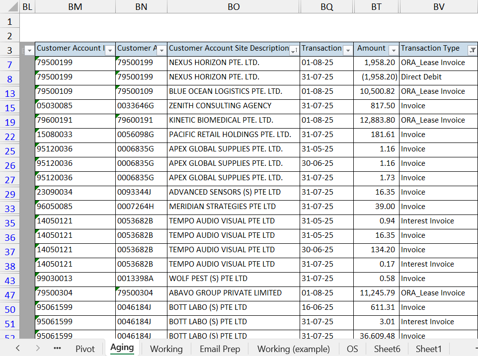
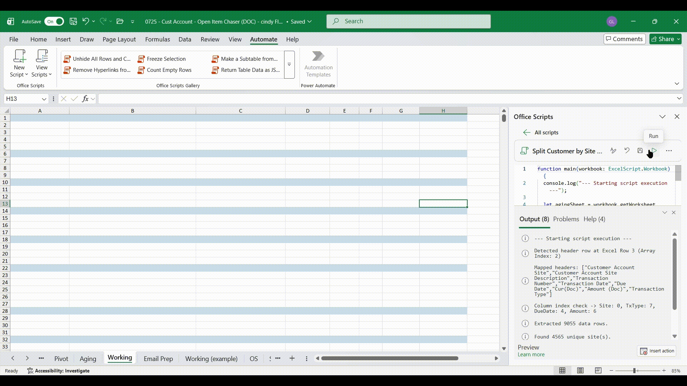
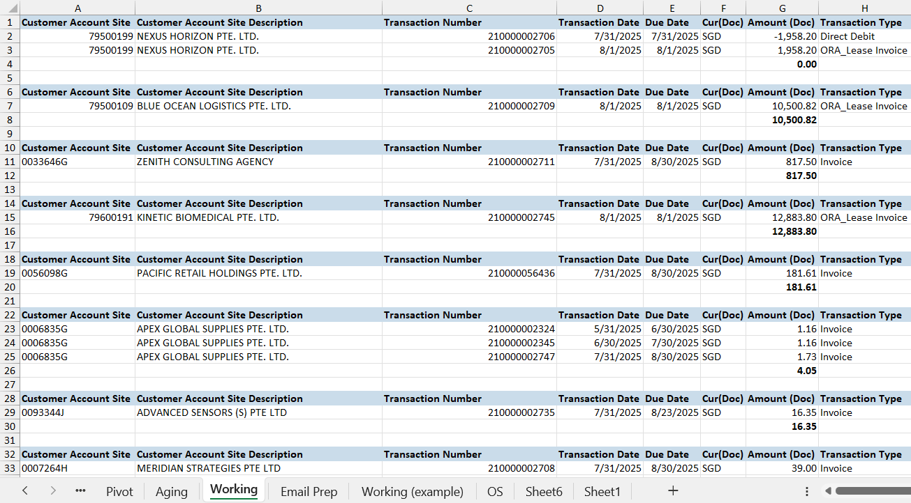
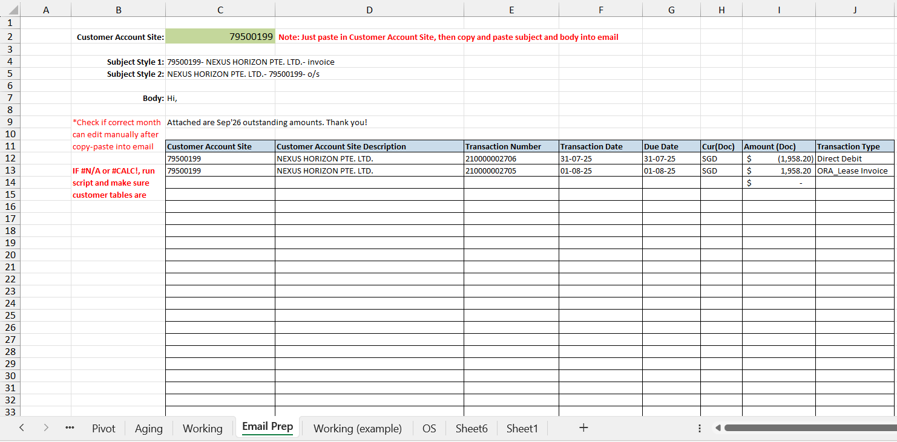

High-Volume Reconciliation & Automated Dispatch Pipeline
A custom TypeScript Office Script that extracts deep target columns (65–73) from raw, unformatted ERP aging dumps, filters against 16 transaction types, sorts chronologically, and compiles site-partitioned subtotal blocks into a staged Working tab to feed an automated Email Prep engine.
Pipeline Flow
Raw ERP "Aging"
Massive unformatted data dump with 70+ columns and hidden fields.
TypeScript Engine
In-memory filter, site grouping, due-date sorting, and dynamic subtotaling.
"Email Prep" Dispatch
Queries the Working tab by Customer Site to generate client emails.
1. Source Data: The Raw "Aging" Sheet
Wide enterprise ERP export containing hidden columns and thousands of unorganized rows.

The raw dump holds key information buried between columns 65 and 73 (Customer Account Site Description, Due Date, Transaction Type, and Amount), alongside hidden metadata columns that break standard formula lookups.
2. One-Click Execution
TypeScript Office Script running in-memory without DOM latency.

A single click triggers the engine: clears the previous run, handles column visibility checks, sorts by Due Date, calculates dynamic =SUM() formulas per site, and applies number formatting in under 3 seconds.
3. Output: The Staged "Working" Sheet
Formatted tables partitioned by customer site with dynamically calculated subtotals.

Output blocks feature soft blue header fills (#CADCEA), standardized date formatting (m/d/yyyy), currency formatting, and customized column widths with auto-fitted metrics.
4. Downstream Query: "Email Prep" Sheet
The final dispatch view querying the Working sheet by Customer Site ID.

Because the Working sheet is consistently structured and grouped, the downstream Email Prep tab queries any customer site to immediately pull clean account tables and prep outbound notifications.
Technical Implementation Details
Targeted Column Slicing
Rather than reading all 100+ columns, it inspects columns 65 through 73, selectively pushing only non-hidden columns (!colRange.getColumnHidden()) to ignore user-collapsed fields.
Whitelisted Transaction Types
Filters data in memory across 16 allowed business types (including ORA_Lease Invoice, Credit Memo, and GIRO), stripping unwanted ledger noise.
Chronological Sorting & Math
Sorts line items chronologically by serial Due Date number before calculating exact coordinates for Excel =SUM(G{start}:G{end}) formulas dynamically.
Batch Render & Memory Speed
Assembles all output blocks, headers, and spacer rows into a single 2D matrix, committing all values via one transactional setValues() call.
Core TypeScript Logic
// Extract unique sites and partition grouped rows with dynamic SUM formulas
for (let site of uniqueSites) {
let siteRows = data.filter(r => {
let rType = String(r[txCol]).trim().toLowerCase();
return String(r[siteCol]).trim() === site && allowedTypes.includes(rType);
});
if (siteRows.length === 0) continue;
// Sort chronologically by Due Date
siteRows.sort((a, b) => Number(a[dueColIndex]) - Number(b[dueColIndex]));
headerRows.push(outputData.length);
outputData.push(headers);
let startRow = outputData.length;
outputData.push(...siteRows);
// Dynamic SUM formula injection
if (amountColIndex >= 0) {
let firstRow = startRow + 1;
let lastRow = startRow + siteRows.length;
let colLetter = getColLetter(amountColIndex + 1);
let sumRow = new Array(headers.length).fill("");
sumRow[amountColIndex] = `=SUM(${colLetter}${firstRow}:${colLetter}${lastRow})`;
outputData.push(sumRow);
sumRows.push(outputData.length - 1);
}
outputData.push(new Array(headers.length).fill(""));
}